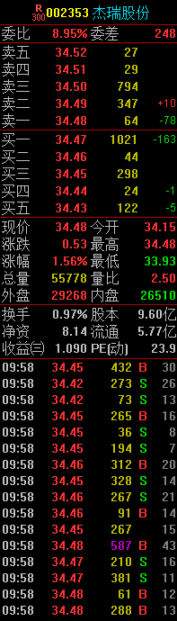
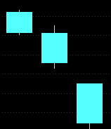
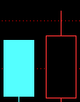
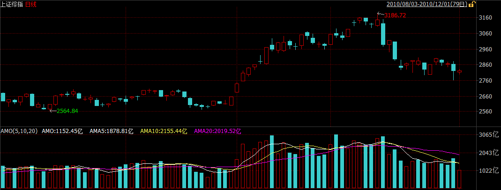
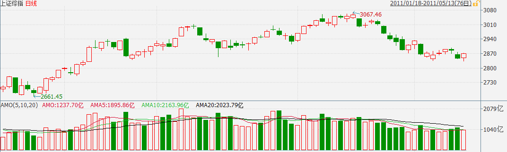
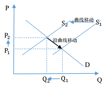
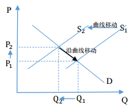

技術面分析
技術面分析是僅從證券的市場行爲來分析證券價格未來變化趨勢的方法。其中市場行爲包括價格、成交量以及價量的時間序列等。
技術面分析是基於弱有效市場不成立的假設下認爲，可以通過對於市場信息的處理戰勝市場。
技術面分析的三個主要假設：
- 包容假設：市場行爲包含一切信息。
- 這一假設認爲，基本面信息對市場供求產生的影響已經充分反映在市場價格和成交量當中，在一般情況下，技術面分析可以代替基本面分析。
- 慣性假設：價格沿趨勢波動
- 需要說明的是，這裏的趨勢指的價格的波動模式，當然單邊勢也是屬於波動模式的一種，但不是全部。技術面分析即利用價格波動的模式預測未來的價格。
- 重複假設：歷史會重複
- 俗話說「江山易改，本性難移」，上述假設的合理性在於，人的行爲模型在很多情況下不受人的主觀能動性的控制，因而會有重複性的市場行爲出現。
市場信息
市場原始信息
開盤價：某種證券在證券交易所每個交易日開市後的第一筆每股買賣成交價格。世界上大多數證券交易所都採用成交額最大原則來確定開盤價。
最高價：某種證券當日交易中最高成交價格。
最低價：某種證券當日交易中最低成交價格。
收盤價：某種證券在交易所一天交易活動結束前最後一筆交易的成交價格。
結算價：結算價是當天交易量與交易價格的一個加權平均獲得的用於當日計算並交割盈虧的基準價，例如目前股指期貨結算價爲當日最後一個小時的成交價格按照交易量的加權平均價。
成交量：在某一時段內交易證券數。
成交額：在某一時段內交易證券金額。
持倉量：多空雙方開立的還未實行反向平倉操作的合約數量總和。
倉差：持倉量與昨日收盤價對應的持倉量的差。
外盤：買家以賣家的賣出價而買入成交，成交價為申賣價，說明買盤比較積極。
內盤：賣家以買家的買入價而賣出成交，成交價為申買價，說明賣盤比較積極。
市場行爲
買入
賣出
多開：多頭開倉
多平：多頭平倉
空開：空頭開倉
空平：空頭平倉
雙開：多空同時開倉
雙平：多空同時平倉
多換：多頭持倉交換
空換：空頭持倉交換
市場指標信息
漲跌幅：當日交易價格與上一交易日收盤價格的變動幅度。
振幅：(最高價 - 最低價) / 上一交易日收盤價 * 100%
均價：當日成交金額 / 當日成交股數
量比：當日開市後平均每分鐘的成交量與過去5個交易日平均每分鐘成交量之比。
委比：(委买手数 － 委卖手数) / (委买手数 + 委卖手数) * 100%, 通常計算五檔委買委賣。
多空指標（分時圖紅綠柱）：(當前本類指數所有上漲股票的最新價之和 - 當前本類指數所有下跌股票的最新價之和) / 本類指數所有股票的最新價之和 * 100
漲跌率：市場上漲家數 / 下跌家數
換手率：當日成交股數 / 當日流通股本
白線： 成份股經加權計算的指數
黃線： 成份股未經加權計算的指數
市場信息簡易使用方法
市場信息可以通過金融市場軟件服務商簡易地獲取，以下是一副典型的個股分時圖信息。

我們來結合圖中數字具體說明
[1] 在分時圖的左邊部分是集合競價走勢圖，交易所規定每個交易日開盤期間進行集合競價，深、滬兩市的集合競價時間為交易日上午9：15至9：25(上交所收盤期間採用連續競價並以最後一分鐘的)。9:25公佈集合競價結果，即開盤價。集合競價最終成交價採用最大化成交金額原則，在集合競價期間右方委託盤顯示若以當前報價狀況的模擬成交價、成交數量(同時顯示在買一和賣一價位)及在此價位未成交數量(若賣方存在未成交顯示在賣二檔位，否則顯示在買二檔位)。9:15-9:20投資者可對申報進行撤單操作，因而在此期間模擬報價通常波動較大，不乏大量試盤行爲。

[2] 9:20-9:25期間所有申報均不可在開盤前撤單，市場所有的報價行爲可視作真實報價，隨着報價逐漸增多，模擬成交數量逐漸增多，模擬成交價格趨於穩定。這段時間的模擬報價走勢顯示了資金在開盤階段的博弈結果，對開盤後的價格走勢有較強的指導作用，如果觀察到臨近9:25時模擬報價不斷上升，且委比始終爲正，則開盤後價格繼續上升的可能性很大(如上圖的貴研鉑業)，反之亦然。
[3] 這一區域顯示的是集合競價期間模擬成交數量和未成交數量，如顯示紅柱則表明這一時刻委比爲正，綠柱代表委比爲負，委比與價格走勢呈現正相關的關係，如集合競價期間委比長時間爲正則價格出現推升的概率很大。
[4] 這一區域顯示的是成交量，通常情況下成交量呈現兩頭高(開盤和收盤)、中間低的特徵，如出現反常狀況則盤中大幅震盪的概率很大，需特別留意。
[5] 白線顯示的是個股的最新報價，交易所在正常交易期間採取連續報價的，以價格優先、時間優先爲撮合標準。例如統一價格，成交先後順序爲：隔夜委託(前一交易日16:45之後的委託)>集合競價期間委託>正常交易時間委託。因而隔夜委託通常用於“搶一字板”。
[6] 在個股分時圖中，黃線顯示的是均價；在指數分時圖中，黃線顯示的是未經加權計算的指數報價。
[7] 委比對於未來價格走勢有正向預測作用。委比越高表明買入意願越強於賣出意願。然而委託報價並非真實成交，許多掛單其真實意圖截然相反。當如下圖的大單出現在34.50的價位時，市場認爲買入力量增強於是出現了許多更高的報價小單，主力資金可以藉此實現高價出貨並在出貨完成後撤銷低位報價單。當此類大單出現時需觀察成交情況和撤單狀況。
通常情況下，有很大買入需求的投資者並不會將自己的購買意願通過掛單爲市場所察覺，在發達國家金融市場有冰山掛單、暗盤等專爲其提供服務，在中國金融市場，他們也通常會進行分批操作，並儘可能擾亂最終交易所發佈的主買主賣性質，隱蔽性很強。在下圖中，主力資金便已多次建倉累計近十萬股，即3,000餘萬元。

[8] 這一列顯示委託數量相比上一時刻的變化量。
[9] 市場信息。
[10]公共信息。
[11]成交信息。其中“B”代表主買成交，計入外盤，“S”代表主賣成交，計入內盤。在普通的level-1行情中，交易所只發佈每個一段時間的成交彙總，而主買主賣性質由該時段最後一筆成交的性質決定，因此交易所發佈的主買主賣性質與實際性質很有可能存在偏差，需要結合[8]委託盤變化量進行綜合考慮。如下圖所示，我們結合委託盤的變化量發現，最新的288手成交中有大約30%是主買的，有70%是主賣的。

下圖則表明上一時刻有41手主買成交，買一價位發生了200手撤單，買二價位發成了19手撤單。
信息發佈缺陷的存在導致了蓄意製造相反性質成交的操盤手法，如下圖所示，1569手的主賣大單實際大部分是主買單，如果只看交易所發佈的成交信息則會誤以爲大單出貨。
[12]“筆”：最新成交信息；“價”：成交價位分佈圖，如下圖所示：

“細”：逐筆成交信息，適用於level-2行情；“日”：日線；“勢”：分時圖；“聯”：關聯指數分時圖；“值”：漲跌停價位等關鍵值,如下圖所示：

“主”：當前市場主要動向，如下圖所示：

“籌”：籌碼分佈圖，如下圖所示，具體應用可參見關於回撤位的案例討論：

[13]點擊不同欄目可獲得分時技術指標，包括量比、多空指標、分時MACD等統計信息。
[14]點擊拓展可獲得關聯證券的最新報價(相同行業、相同地區、相同概念等)。
這是一副典型的個股日K線圖信息

[1]顯示復權狀況，前復權以當前股本爲基準向前進行權息復位以確保股價的連續性，後復權以初始股本爲基準進行復權，復權以指定日期股本爲基準進行復權。
[2]顯示K線技術指標具體數字。
[3]點擊信息地雷可獲得當日歷史信息。
[4]K線技術指標(圖爲均線)。
[5]成交量及5,10日成交量均線。
[6]技術指標區(圖爲MACD)。
[7]點擊不同欄目可獲得各技術指標。
案例討論 莫建軍股價操縱案：集合競價蓄勢 盤中推高出貨
虛假買入申報推高股價，隨後撤銷買入申報並在高位賣出股票
某檔股票在開盤前的集合競價階段有大量漲停價買單，而在開盤後又屢現多筆高價買單，你會不會奮不顧身地“殺”進去？相信很多人的回答是肯定的。
莫建軍正是利用人們這種“跟大資金動向操作”的心理，用自己的“大資金”頻繁申報高價買單，待其他人跟風推高股價後，便迅速撤下已掛的買單，如此反復，待股價達到一定高位時，拋出自己手中持有的股票，從而獲利。
從中國證監會有關部門獲得的資訊顯示，莫建軍在2007年的9個交易日中，通過頻繁高價買入申報和撤單行為，共交易7檔股票，其中有5檔股票盈利176.24萬元；2檔股票虧損98.76萬元，合計盈利77.48萬元。
證監會認定，莫建軍的上述行為構成了《證券法》中的“操縱證券市場”，沒收違法所得並處一倍罰款，《行政處罰決定書》已于近日送達。這是截至目前證監會行政處罰的第四例以虛假申報方式短線操縱市場案。
集合競價“蓄勢”
“莫建軍這個人非常聰明，也非常專業，在證券市場上做了很多年。”一位接近莫建軍的人士說。本報記者看到的《行政處罰決定書》顯示，最終認定莫建軍9日內操縱7檔股票。
一位接近該案調查組的人士介紹，與此前的周建明案等不同的是，莫進行操縱不是集中在某個時間段，而是“全天候”進行，集合競價、連續競價、盤中、盤尾均有操作，甚至各時段互相作用達成推高股價並“出貨”的目的。
從證監會認定的莫建軍操縱行為看，其習慣在每日開盤前的集合競價時段(9∶15-9∶25)開始“蓄勢”。2007年3月9日，9∶15∶12，莫建軍分兩筆以綜藝股份(15.59,0.48,3.18%)當日漲停價位17.15元申報買入117，300股，但分別在9∶18∶43和9∶18∶31撤單。但在9∶24∶21，莫帳戶又以15.65元申報賣出該股票13，200股。
交易所的統計資料顯示，集合競價階段該檔股票的市場買入總申報量為379，000股、總撤單137，100股，莫的帳戶買入申報量占市場總申報量的65.20%，買入申報撤單量占市場總撤單量的85.56%。
在大量“假高價買單”的干擾下，當天綜藝股份以15.62元開盤，並迅速摸高至當日最高價16.19元。
前述接近調查人員人士表示，“按照市場常態，買入前五檔上的申報量大多比較均衡，且總量不會很大，假定共有一百萬股的申報買入量。但此時如有人申報一千萬股進去，結果就像一塊石頭扔進水裡，會引起其它投資者跟風，從而增加虛假推動量。”
在最終認定的莫建軍操縱的7檔股票中，有6檔股票均在集合競價階段進行過大量虛假申報和撤單。在2007年5月9日操縱高鴻股份(9.66,0.20,2.11%)股票過程中，莫建軍也是先在集合競價階段大量申報買入並撤單。
9∶15∶07，以當日漲停價格15.79元申報買入63，100股；9∶18∶30，以15.00元申報買入66，500股，上述兩筆申報分別在9∶18∶08和9∶19∶06撤單。9∶23∶45，莫以14.10元申報買入70，700股，隨後以委託價全部成交。
“從這個申買價來看，他清楚地知道，如果他不虛報買單，這檔股票應該是什麼價位。”前述人士說。
從操作手法上看，莫建軍明顯是在利用目前的交易機制上的便利：9∶15到9∶25之間，此時能申報也能撤單，即以漲停價申報買單，把集合競價推高，9∶25以後就只能申報不能撤單，故在此時間之前把漲停板申報價格撤掉，但較高的集合競價已經形成；9∶25之後或9∶30開盤時突然賣出股票並獲利。
盤中推高出貨
集合競價階段的蓄勢，為盤中出貨打開了一定的股價空間。
來自交易所的交易資料顯示，2007年3月9日，莫建軍在集合競價階段頻繁對綜藝股份申報、撤單、未成交1股之後，在盤中開始了“六指琴魔”般的操縱表演。
9∶37∶29至9∶59∶48，莫的帳戶連續8筆申報買入，共計1，552，000股，申報價格從第1筆的15.5元提高到第8筆的15.96元，之後全部撤單，撤單距申報時間平均1分03秒，最短僅10秒。在此期間，該股票的成交價格從莫申報前的15.57元上升到申報後的16.02元。
與此同時，9∶41∶18至10∶16∶43，莫以均價15.96元賣出10筆，共計145，889股。至此，一波“申報——推高——撤單——賣出”的完美操縱暫告一段落。
當然，表演遠未結束。10∶17∶54至10∶43∶56，莫連續5筆申報買入，共計1，766，000股，申報價格從15.70元至15.95元不等，後全部撤單。在股價上升過程中，10∶22∶31至10∶46∶59，莫以均價15.92元賣出15筆，共計158，050股。如此反復操作。
根據證監會的調查結果，莫用自己實名帳戶申報買入綜藝股份股票29筆，共計10，730，100股，但全部成功撤單。買入申報撤單量占該股票當日市場買入總申報量的57.07%。
更有甚者，2007年6月11日，莫申買長城電工(12.00,0.42,3.63%)股票37筆，撤單34筆，買入申報撤單量占該股票當日市場買入總申報量的65.39%。次日，莫又申報買入5筆長城電工，並全部撤單。其間，莫屢次在股價推高後將持有股票賣出獲利。
“調查範圍一般是在第一檔跟第十檔之間，(莫建軍)的買單一般是掛在三檔以後，(因為)成交機會比較小。這樣做的結果是形成虛擬買盤洶湧的假像，從而吸引其他投資者跟進，達到維持股價或意圖抬高股價的目的。”前述人員說，在連續進行申買和撤單操作以後，一般都會有一個反向操作，即拋賣單出來。
操縱認定
《行政處罰決定書》顯示，莫建軍的上述行為違反了《證券法》第七十七條第一款第四項關於禁止“以其他手段操縱證券市場”的規定，構成了操縱證券市場行為。
一位元接近監管部門的人士對本報記者說，莫並不承認自己的行為是“操縱市場”。在莫看來，在2007年用此種手法操作股票“非常普遍”，是一種交易技巧，並不屬於違法行為。
“從審理來看，最終認定的行為只是(莫操作股票)行為的一部分。從2006年開戶以來，他就一直採取這種行為，但最終只對能查實認定、比較典型的交易作了處罰。”前述人士說。
在收到《行政處罰告知書》後，莫建軍即申請了聽證。在10月20日的聽證會上，莫建軍的代理律師提出三點疑問，其中之一是認為莫的行為不是“操縱證券市場”。對此，處罰委相關人士表示，該律師對法條理解有誤。
從莫建軍的股票交易記錄來看，多次申報買入，但均在短時間內全部撤單，成交量為零或者占比非常小，但相關股票的價格均隨其頻繁申報買入而上漲。
“操縱市場最本質的特徵是以不正當手段，影響證券交易價格或者證券交易量，擾亂證券市場秩序。”一位上交所人士說，操縱行為人為地扭曲證券市場的價格形成機制，造成證券市場供求假像，破壞證券市場價格發現功能、風險管理功能和資源配置功能。
至於操縱手法，隨著市場發展已經是花樣翻新，在《證券法》裡適應的法條是“以其他手段操縱市場”。
莫的代理律師提的第二個疑問是時效性，即莫的行為已經過了兩年的訴訟期，不應再予追究。
“證監會是以發現時間來算的。以違法行為結束為時點，到發現的時間點之間只要不超過兩年都是可以的，而該案是2008年4月20日正式立案，發現的時間點就更早，因此與2007年3月相距沒超過兩年。”一位參與了聽證會人士說。
莫律師還對違法所得的計算提出了質疑，認為莫的建倉行為與賣出行為可能有一定時間差，有一檔股票間隔了十幾天，故認定違法所得應只計算當天拉抬股價所造成的差額即可。
監管部門的大致計算標準是，賣出(或持有)時點的市值減去買入時的金額。“計算違法所得或採取罰沒處罰措施的慣例是，只要認定行為的一部分違法，整個行為視作違法。比如對會計師處罰，通常是沒收全年費用。因此，最終沒有採納律師意見。”前述人士說。
警惕“連環”操縱
從監管部門公佈的情況來看，以虛假申報、特定時段操縱等為主的短線操縱正風靡市場。
仔細分析已處罰的四例虛假申報操縱案會發現，短線操縱的手段正在不斷變化，《證券市場操縱行為認定指引》(下稱《認定指引》)中列舉的多種操縱形式，從最初的單一使用，逐步發展到多種手法套用，相互作用，連環操縱。
第一例虛假申報類操縱市場案——周建明的手法較單純。即在正常交易時段，利用他人帳戶，在較短時間內連續掛出多筆大額買單，申報價格也逐筆提高，待其他投資者跟進買入後，迅速撤單，隨即以當時高價賣出手中早已持有的股票，順利獲利。
盧道軍的手法相對複雜些，是用兩個以上的帳戶組來進行操縱。當然，這些聯動帳戶是較容易被交易所的“電子眼”偵察到的。
張建雄操縱市場案也是歸為虛假申報類操縱，所不同的是，張比周更有“氣魄”，其最慣用的手段是把某檔股票從跌停直接拉到漲停，再出貨。2008年7月3日， ST源藥由跌停板被拉到漲停板，就是張建雄的“傑作”。
除了在正常交易時段頻繁掛單-撤單-賣出外，張建雄還在開盤前的集合競價階段“玩花活兒”。
2008年7月4日，也就是ST源藥漲停次日，9時18分22秒，正值開盤集合競價時，張以漲停價5.7元掛出99萬股買單，繼續製造無量漲停的格局，40秒後撤單。9時24分53秒，張建雄將180萬股ST源藥股票以5.68元、略低於漲停價的價格全部賣出。
路數已經出來了：頭天拉漲停，製造對次日繼續漲停的幻象，並在次日集合競價階段繼續“忽悠”，待其他投資者以漲停價沖進來，其在第一時間以略低於漲停價的價格掛出賣單，保證成交。
到莫建軍，幾乎是全時段操作，從集合競價到連續競價，從盤中到盤尾，不放過任何一個時機。本報記者從參與該案調查的人員處得知，莫在尾盤也有多次操作行為，只是最終未予認定。“在快收市的時候掛高價買單，讓人預期有大資金進入，次日該股票會繼續上漲，這樣投資者就會在次日跟進，這也是很常見的一種操作股票的手法。”一位在市場上混跡十年之久的“資深股民”如是說。
趨勢理論
利用慣性假設，根據價格波動的規律，通過假設趨勢繼續延續的方法，運用騎乘趨勢的方法預測價格，當然如果發生趨勢轉變的時候需要止損。
最爲顯然的一種慣性假設即後一個交易日的漲跌幅與前一個交易日的漲跌幅正相關，換言之，這可以通過股票價格時間序列的分析進行驗證。以上證指數爲例，在早年階段其走勢具有明顯的慣性，從近幾年的數據來看慣性已經明顯減弱，在統計意義上不顯著。
最近5575個交易日

最近2579個交易日

最近1579個交易日

最近579個交易日

形態理論
利用重複假設，通過尋找歷史走勢中相似的形態，運用歷史形態之後的價格走勢預測當前形態之後的價格走勢。
K線形態
最簡單的形態理論即爲K線理論，即通過尋找歷史市場信息中相近的K線或K線組合，運用在它們之後的價格表現來預測當前K線狀態下的價格表現。
K線源於日本德川幕府時代（1603～1867年），被當時日本米市的商人用來記錄米市的行情與價格波動，後因其細膩獨到的標畫方式而被引入到金融市場。
單個K線由開盤價、最高價、最低價和收盤價組成，如果收盤價高於收盤價稱爲陽線(紅色柱狀)，如果收盤價低於開盤價稱爲陰線(綠色柱狀)。開盤價與收盤價之間的部分稱爲K線的實體，實體上方部分稱爲上影線，實體下方部分稱爲下影線。
以單個K線形態陰線「射擊之星」爲例，射擊之星的含義爲價格呈現衝高回落的態勢，K線具有明顯的上影線，用量化語言表述爲：
- 收盤價 < 開盤價
- (最高價 - 開盤價) > 2 * (開盤價 - 收盤價)
- 開盤價 – 收盤價 > 收盤價 – 最低價

通過對2010.1.1 – 2013年12月31日的A股數據進行回測，我們發現符合上述條件的30,479個案例第二個交易日的期望收益爲 -0.1952%，因而射擊之星經常被看作是趨勢反轉的信號。
同樣地，在大陰線之後出現T字線，或者在大陽線之後出現墓碑十字線，都是趨勢反轉的信號。
K線組合
三白武士

三飛烏鴉

早晨之星
黃昏之星

陽包陰

陰包陽
對稱三角形

上升三角形

下降三角形

矩形
技術指標
技術指標分析的方法，即應用一定的數學公式，對原始數據進行處理，得出指標值，將指標值繪成圖標，從定量的角度對股市進行預測的方法。
技術指標分爲以下幾個類別：
- 趨勢型指標：移動平均線(MA)，指數平滑異同平均線(MACD)，布林軌道線(BOLL)
- 超買超賣型指標：威廉指標(WMS)，隨機指標(KDJ)，相對強弱指標(RSI)，乖離率指標(BIAS)
- 人氣型指標：心理線指標(PSY)，能量潮指標(OBV)
從本質而言，運用技術指標的本質是挖掘價格的趨勢並預測趨勢的改變。以移動平均線爲例，資產價格在移動平均線之上波動可以被認爲是上升趨勢，一旦價格下破移動平均線則說明上升趨勢逆轉。其操作策略與回測的思想即，在移動平均線之上選擇持有，下破移動平均線進行賣出操作。
不同的技術指標在預測趨勢方面特性不同，例如長期的移動平均線和MACD在預測大趨勢方面準確性較高，但反應速度較慢，適合於波動較爲緩慢的股票市場，而短期的移動平均線和KDJ反應速度迅速但準確性一般，適合於運用在商品期貨以及外匯市場。
技術指標背離即技術指標的運行方向與價格運行方向背道而馳，例如MACD在價格創新高的情況下並未創出新高。技術指標背離現象是較爲可靠的轉勢信號。
如多個不同技術指標同時發出相同的信號則正確率較高，如存在量能的配合則有效性更高。
簡單移動平均線(SMA)
簡單移動平均線計算指定數日收盤價的平均值，反映一段時間內平均的持倉成本。其計算公式爲：
SMA(n) = 最近n日收盤價之和 / n
n通常取5, 10, 20, 30, 60, 120, 250
n取值較小爲短期平均線，n取值較大爲長期平均線。
指標靈敏度與n取值呈負相關，正確率與n取值呈正相關。
在使用時通常將最新收盤價與SMA(n)進行比較，如收盤價高於SMA(n)則代表上升趨勢，如收盤價低於SMA(n)則代表下跌趨勢，如果收盤價上穿或下破SMA(n)則相應級別的趨勢可能發生逆轉。
當價格回調至SMA(n)附近時
短期平均線從下往上穿越長期平均線稱爲黃金交叉，此爲確定上升趨勢的開始，可進行買入操作。
短期平均線從上往下穿越長期平均線稱爲死亡交叉，此爲確定下跌趨勢的開始，可進行賣出操作。
多條均線粘連時，市場沒有趨勢，一旦突破震盪區間則維持趨勢的動力很強。
SMA(n)反映平均持倉成本，該指標適用於強趨勢型行情，例如在資金推動型的股票市場和債券市場中使用將獲得較高的正確率。而在震盪行情中，多條均線粘連狀態下難以進行有效的判斷。
布林軌道線(BOLL)
布林軌道是由移動平均線變化而來，並經過改良移動平均線通道上下限的計算方法，以標準差的計算方法，從而令上下限的波幅跟隨市況波動程度而改變。其計算公式爲：
中軌 = 上一交易日的MA
上軌 = 中軌 + 2 * MD
下軌 = 中軌 - 2 * MD
其中MA爲過去n日平均收盤價格，MD爲過去n交易日收盤價標準差。
n通常取10, 20
布林軌道線反映市場狀況的超買或超賣狀況，令投資者對市況提高警覺。在圖標中以三條曲線顯示，從上至下依次稱爲上軌、中軌和下軌。
當價格升至上軌時爲賣出信號，價格將受阻回落。如果價格升破上軌則說明趨勢轉強，需止損。
當價格跌至下軌時爲買入信號，價格將企穩回升。如果價格跌破下軌則說明趨勢轉弱，需止損。
若價格第二次上衝上軌或下探下軌受阻則趨勢隨時發生逆轉。
當布林軌道明線收窄時，市場無趨勢區間震盪，等待方向性選擇。
該技術指標的有效性依賴與趨勢期間價格變動速率的一致性，認爲價格的過快變動將會回歸到正常趨勢中，並不能適應波動率迅速變化的市場。該指標在原生品市場的有效性高於其在衍生品市場的有效性。
該技術指標隱含的價格波動短期內呈正態分佈的假設使其在無法應對價格肥尾分佈以及非連續變化。
指數平滑異同平均線(MACD)
指數平滑異同平均線是由移動平均線變化而來的輔助指標，在各大技術指標中運用較多，適用範圍較廣。該指標的重點在於比較長期趨勢與短期趨勢的差異，用短期趨勢的變化來對長期趨勢進行預測。
首先運用兩條移動平均線，一條爲短期平均線，一條爲長期平均線，通常情況下默認使用12日均線和26日均線。在價位波動時，短期平均線較爲敏感，長期平均線反應較慢，兩者的差異在價位大幅波動時擴散，反之則收窄。
DIFF = EMA(LONG) - EMA(SHORT)
DEA = EMA(DIFF)
MACD = DIFF - DEA
DEA的均線日數默認爲9
在圖表中，將DIFF和DEA連成線，MACD則以柱狀的形式展示，基準軸爲零軸。
DIFF在0軸之上表明均線多頭排列，上升趨勢；在0軸之下表明均線空頭排列，下跌趨勢。
DIFF向上穿過0軸即均線理論中的黃金交叉；向下穿過0軸即均線理論中的死亡交叉。
DIFF向上穿過DEA爲黃金交叉(即MACD上穿0軸)；DIFF向下穿過DEA爲死亡交叉(即MACD下破0軸)。
若黃金交叉發生在0軸之上，意味著升勢一浪高於一浪，是強烈買入信號，若死亡交叉發生在零軸之下則是強烈賣出信號。
若黃金交叉發生在0軸以下或者死亡交叉發生在0軸之上則視作弱趨勢反轉信號。
若DIFF和DEA均在零軸之上且遠離零軸，價格一浪高於一浪，但MACD缺一浪低於一浪，是趨勢由升轉跌的信號。
若DIFF和DEA均在零軸以下且遠離零軸，價格一浪低於一浪，但MACD缺一浪高於一浪，是趨勢由跌轉升的信號。
MACD指標相較均線理論反應靈敏度更高，均線理論往往在相反趨勢形成初期才發出信號，MACD則在當前趨勢的末期(趨勢減緩期)即提前發出信號，在資金推動型市場中能夠提前觀察到趨勢推動力量的衰減，有助於交易者進行提前判斷。12,26,9的缺省參數設置是“性價比”最高的參數設置，不過其靈敏度低於隨機指標(KDJ)。
隨機指標(KDJ)
如果證券價格經常能以接近短期最高價收市，該證券在近期處於強勢，反之如果證券價格經常以接近短期最低價收市，該證券在近期處於弱勢。隨機指標就是根據上述理念涉及而成，指標計算方式爲：
n日RSV = (Cn - Ln) / (Hn - Ln) * 100
其中Cn為第n日收盤價；Ln為n日內的最低價；Hn為n日內的最高價。
0 =< RSV <= 100
當日K值 = 2/3 * 前一日K值 + 1/3 * 當日RSV
當日D值 = 2/3 * 前一日D值 + 1/3 * 當日K值
當日J值 = 3 * 當日K值 - 2 * 當日D值
若無前一日K值與D值，則分別用50來代替。
在圖表中，將K，D，J值分別連成K，D，J線，基準線爲50。
對於價格改變靈敏度：J線 > D線 > K線
80以上爲超買區，20以下爲超賣區。
快速線金叉慢速線爲買入信號，快速線死叉慢速線爲賣出信號。
隨機指標與價格走勢發生背離爲趨勢反轉信號。
隨機指標善於捕捉走勢逆轉的那一刻，靈敏度極高，因而在大多數價格頂部與底部處隨機指標均正確、及時地發出了信號，但這一指標的缺陷是發出信號的頻率較高導致噪聲過多，大部分信號並非發生在趨勢轉折點。
相對強弱指標(RSI)
相對強弱指數是一項領先的動量指標，反映一段時間內上升平均幅度與下跌平均幅度的比率。其計算方式爲：
RSI(n) ＝ A / (A＋B) × 100%
其中A表示n天中價格上升時漲幅的總和，而B则價格下跌時跌幅的總和。
n通常取14，也可取9或25。
指標靈敏度與n取值呈負相關，正確率與n取值呈正相關。
0 <= RSI(n) <= 100，RSI高代表升勢，RSI低代表跌勢。
這一比率類的指標有效排除了絕對波動率的干擾，適用範圍較廣。其具體的使用方法爲：
當RSI升至70時，市場進入超買區，當升至80以上則進入了極度超買區。
當RSI跌至30時，市場進入超賣區，當跌至20以下則進入了極度超賣區。
超賣超賣現象發生時，趨勢逆轉的可能性較大。
當RSI與價格走勢發生背離現象時，趨勢逆轉的可能性很大。
該指標適用於弱趨勢震盪行情，趨勢形成通常較爲脆弱容易逆轉，在外匯市場和貴金屬市場的短期分鐘線使用較爲有效。不適用於強趨勢型行情，RSI的逆轉預測作用錯誤率很高，即使出現極度超買超賣或多次背離也無法準確預測轉折點，因而在國債市場和股票市場的常週期分時中使用較少。
案例討論：量價關係
在對成交量是否增加以及價格是否上升進行枚舉分類可以得到四個不同的類別：
放量上升
根據供給需求模型，價量齊升通常體現了需求的提升

產生於2010年10月的上升行情便是一個經典的放量上升的案例，當月上證指數上升了12.18%，資料顯示，隨著經濟資料回暖，僅十月初資金流入超過200億元。

縮量上升
不同于供給增加，縮量上升反映的主要是需求端的變動，由供給需求模型可以看出，供給的減少導致了縮量上升的結果。

在莊股時代中，由於籌碼大部分集中在莊家手中，在他們還沒有出貨之前，股價通常呈現縮量上升的態勢。

還有一個典型的案例便是發生在2011年4月，當時指數連創新高但是成交量卻一直萎靡不振，為後市的下跌埋下了伏筆。

放量下跌
由供給增加帶來的結果是放量下跌，這與由需求上升帶來的結果截然相反。

2013年錢荒即是由供給增加導致的放量下跌。

縮量下跌
這一現象，也就是大家經常聽到的陰跌，是由需求減少造成的。這一現象的產生按時了供給壓力的減緩，即可能是由於出售方希望等待下一個出貨良機的暫時性減緩拋售，其後往往伴隨著又一輪的放量下跌，也可能是由於價格過低導致供給方的惜售，價格的下跌僅是由於需求不足造成。而如果在經歷了一段事

滬深股市在過去的幾年中除了2010年雙十一的暴跌、2011年美債危機以及2013年年中的錢荒等幾次事件出現了放量下跌的現象外，其餘情況多以縮量下跌為主，顯示出A股市場需求，即資金面的嚴重緊張，可能也在一定程度上導致了小市值股票的繁榮。
案例討論：曲線移動和沿曲線移動
在供給需求模型中，供給方或者需求方的曲線移動都將導致最終市場均衡點沿著曲線的移動。這裡需要明確的是曲線移動和沿曲線移動的區別。
曲線移動代表的是激勵的改變，是一種主動的改變，亦即在每個價格水準上，供給或者需求的改變。例如，由利比亞戰爭導致的石油減產是一種主動的，在每一個價格水準上供給量都下降的供給減少。
沿曲線移動並沒有激勵變化，是一種被動的改變，是因為另一方曲線的移動導致的市場均衡點的變化。例如，2008年石油暴跌引起沙烏地阿拉伯的石油減產就是一種被動的，沿著曲線移動的供給量減少。
 

與此同時，我們需要認識到，在有效市場中，曲線移動帶來的沿曲線移動的過程是暫態的，這也就導致了價格在新消息發佈之後的跳變。然而在並非有效的市場中，上述過程是逐漸進行的，這也是技術分析中所言“價格沿趨勢波動”的原因之一。
案例討論：淺談回撤理論
在資本市場中我們經常會看到如下技術分析：“某品種目前觸及**回撤位，預計在此位置將會有較大支撐/壓力，建議買入/賣出”。然而目前對於回撤理論的有效性探討較少，本文將從均衡的角度出發，尋找回撤位背後的理論支持。 回撤位即某一品種的價格在經過一波上漲或下跌之後，產生反方向的調整後達到的位置，x-回撤位即價格回吐了前期漲跌幅的x，（例如0.5-回撤位就是價格回吐了前期漲跌幅的一半）。簡單起見，我們僅討論上升之後的回撤。 在這裡用到的一個重要的測定指標為籌碼成本，亦即在價格波動過程中價格加權成交量的平均值，例如當價格大於籌碼成本且價格上升的時候，新增的成交將會提高籌碼成本。
一、
情景假設：在價格波動的過程中，成交量恒定且籌碼僅在上升的過程中堆積，即當價格從k漲至k + 1時，籌碼成本分佈服從U(k, k + 1) 均衡條件：價格達到x-回撤位時，盈利籌碼數量= 虧損籌碼數量 方程：x = 1 – x 解得：x = 0.5
二、
情景假設：在價格波動的過程中，成交量恒定，籌碼在上升和下降途中都會堆積，即當價格從k漲至k + 1，隨後價格又跌至了k + x，那麼(k + x, k + 1)的分佈密度是(k, k + x)的2倍 均衡條件：價格達到x-回撤位時，盈利籌碼數量= 虧損籌碼數量 方程：x = 2 * (1 – x) 解得：x = 2 / 3 = 0.67
三、
情景假設：在價格波動的過程中，成交量相對價格有正相關性，假設價格從k漲至k + 1，隨後價格又跌至了k + x，那麼(k + x, k + 1)的分佈密度是(k, k + x)的3倍 方程：x = 3 * (1 – x) 解得：x = 3 / 4 = 0.75
四、
情景假設：在價格波動的過程中，成交量恒定，籌碼在上升和下降途中都會堆積，當價格到達x-回撤位時，盈利籌碼占x，平均單位盈利x / 2， 虧損籌碼占(1 – x) 2，平均單位虧損(1 – x) / 2 均衡條件：價格達到x-回撤位時，淨盈利金額= 0，即盈利金額= 虧損金額 方程： x x / 2 = (1 – x) 2 (1 – x) / 2 解得： x = 2 – sqrt(2) = 0.59
五、
情景假設：在價格波動的過程中，成交量恒定，籌碼在上升和下降途中都會堆積，同時利用艾略特波浪理論對時間週期的假設，回探到回撤位的時間長度= 從起點上升到回撤位的長度，也就是說在回撤過程的籌碼堆積量為x。此時盈利籌碼占x，平均單位盈利x / 2，虧損籌碼占(1 – x + x)，平均單位虧損(1 – x) / 2 均衡條件：價格達到x-回撤位時，淨盈利金額= 0，即盈利金額= 虧損金額 方程：x x / 2 = 1 (1 – x) / 2 解得：x = (sqrt(5) – 1) /2 = 0.618
均衡條件的合理性
1、根據行為金融學的研究成果，人對過去的資訊十分在意，即使它們獨立于未來的資訊，在意自己的初始建倉成本(sunk cost effect)就是一個普遍的現象，這樣籌碼的數量和成本分佈將會在短期內對價格產生影響。而市場籌碼平均成本即代表了整個市場的建倉成本，在數量或金額上的盈虧均衡點上將會達到多空平衡。
2、艾略特波浪理論的時間週期：回探到回撤位的時間長度= 從起點上升到回撤位的長度，這一假設可以理解為價格回檔需要消化前期的獲利籌碼的過程，在成交量恒定的情況下，消化所有獲利籌碼需要相同的時間週期，當獲利籌碼消化完畢後即會產生趨勢改變動力。
回撤幅度的一些性質
可以看到，如果頂部量能較大則回撤幅度相對有限，但達到回撤位後反彈的難度較大，而如果頂部籌碼堆積較輕，則可能出現較大幅度回撤，不過隨後反彈的空間也較大。 注：上述結論的得出依賴諸多假設，在實際運用過程中，需要充分利用成交量等市場訊息，對籌碼的分佈情況進行動態調整，利用均衡條件獲得更為精確的回撤位置。